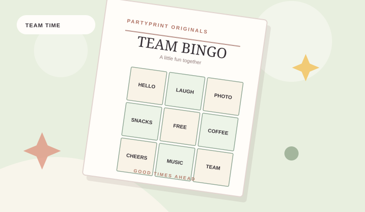

What makes an office party game work?
Good work events give people room to choose how they participate. Games should be simple enough to explain in less than a minute, appropriate for different ages and roles, and fun without requiring personal disclosures. A quiet background game often succeeds where a competitive icebreaker doesn't.
Three games to keep in your back pocket
Office moment bingo
Hand every participant a different card filled with recognizable work-party moments. You'll see squares like “someone mentions a meeting,” “a guest shares a win,” and “a coworker asks about the snacks.” Let everyone mark items as they happen. The first person to complete a line wins — or skip the competition and let guests finish their own cards.
A team trivia break
Use a short list of everyday questions and office-friendly facts. Our generated trivia has 12 questions and a separate host answer key. Give teams five to ten minutes to discuss answers, then read out the correct responses. Avoid questions about coworkers' personal lives unless they've explicitly opted in.
Scavenger hunt around the room
Find a sticky note, colorful pen, plant or coffee cup. Keep the hunt inside the event space and don't ask anyone to open drawers, private offices or personal bags. Pairing people up makes the activity more social without being intimidating.
Offer sitting-friendly alternatives and a readable paper copy. Avoid timing or physically demanding tasks unless everyone can comfortably participate.
A realistic 30-minute activity plan
- 0–5 minutes: Invite people to grab a bingo card as they enter.
- 5–15 minutes: Run a low-key team trivia round.
- 15–25 minutes: Let people mingle and complete bingo squares.
- 25–30 minutes: Recognize winners, thank participants and move on.
How to print your office party kit
Choose “Office party” in PartyPrint, set the number of bingo cards and select your preferred color theme. Each card is independently shuffled. Print the whole pack, or save it to PDF in your browser's print dialog. No employee names or accounts are required.
Frequently asked questions
Can a remote team use these games?
Yes, if you save the printable pack as a PDF and share the individual pages with remote attendees. For virtual events, you can also read the trivia questions aloud on a video call.
What about a large team?
One batch supports up to 48 bingo cards. For a larger group, create and print another randomized batch. Keep prizes inexpensive so nobody feels pressure to compete.
Our free creator builds matching printable bingo, trivia and scavenger hunt sheets for your event.